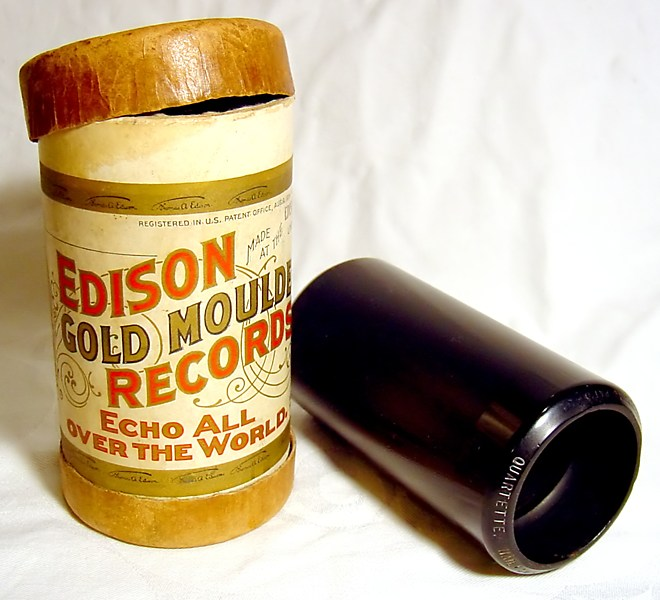
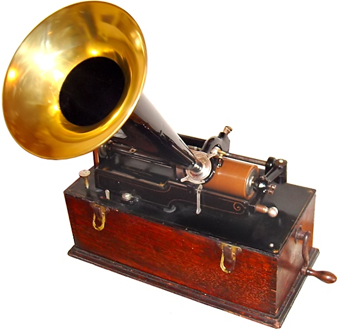
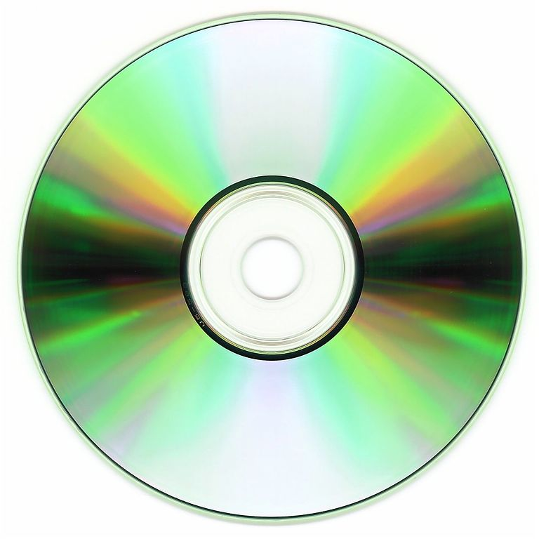

class: center, middle, telemeta-inverse # Multimedia Digital Content Management and Open Source <hr> ## Telemeta creation and development <img src="img/telemeta_logo_wh.png" height="100px" /> ### Guillaume Pellerin (IRCAM, Paris, France) Workshop @ UNAM, Mexico --- class: telemeta # Dr. Guillaume Pellerin <hr> - Eng. of the *Arts et Métiers* french National High School <br> physics, mechanics, computer simulation - Master degree *ATIAM* of the *Sorbonne Universités* <br> acoustics, signal theory and computer science applicated to music - Ph.D thesis at the *Sorbonne Universités* (non-linear acoustics and computer simulation) - Associate professor at *Conservatoire des Arts et Métiers* - Funder, CE|TO of the *Parisson* company <br> projects : Telemeta, TimeSide, TeleForma, TeleCaster - Head of the Web Team at *IRCAM*, Paris, France ### guillaume.pellerin@ircam.fr | @yomguy --- class: telemeta # IRCAM <hr> ## Institut de Recheche et de Coordination Acoustique / Musique .pull-left[ - created in 1977 by Pierre Boulez - research, transmission, production - 100 researchers, 20 sound engineers, 30 administratives - improving co-creation process between composers and researchers - archiving contemporary music https://www.ircam.fr ] .pull-right[ .right[] ] --- class: telemeta-inverse, outline # Outline <hr> <br> 1. Introduction 1. Concepts of multimedia digital content management 1. Open source and methodologies for sustainable archiving platforms 1. Telemeta : an open collaborative multimedia management system for musicology 1. Conclusion --- class: telemeta # Introduction <hr> ## What is this? .pull-left[  ] -- .pull-right[  ] --- class: telemeta # Introduction <hr> ## What about the digital revolution? - from a **analogous** *continous* world to a **digital** *discrete* world - from the **shelfs** to the **Web** - from **static** to **dynamic** archiving - from **centralization** to **decentralization** --- class: telemeta # Introduction <hr> ## From analogous (continous) signal to a digital (discrete) signal .pull-left[ ] .pull-right[  ] --- class: telemeta # Introduction <hr> ## In every domain, physical damage will happen and digital is **weak** .pull-left[ .right[] ] .pull-right[ .right[] ] --- class: telemeta # Introduction <hr> ## In every domain, physical damage will happen and digital is **weak** .pull-left[ .right[] ] .pull-right[ .right[] ] --- class: telemeta, tight # Introduction <hr> ## Context - digital age: archiving and accessing tons of research data - network age: internet, social networks, mutualization of resources ## Challenges - musicologists need music, metadata and search engines - computer scientists need music and semantic datasets - both communities need to learn from one another to jointly - culture data valorization >> digitization budgets - develop tools for computational musicology - how do we grow and scale data and technologies in a sustainable way? --- class: telemeta # Introduction <hr> ## Some solutions for sustainabilty in the digital domain - to rely on **standards** - **open source** formats, players and managers - data **replication workflow** (easier with computer) - editing, publishing and sharing! --- class: center, middle, telemeta-inverse # Concepts of multimedia digital content management --- class: telemeta # Multimedia digital data content management? <hr> - Multimedia vs monomedia - Digital vs analogous - Data vs metadata - binary data vs text data - formats & standards > WWW! - frameworks & librairies - operating systems and infrastructure - UI and UX - collaboration - Model - View - Controller (MVC) architecture --- class: telemeta, tight # World Wide Web <hr> .pull-left[ ## http:// - 1989 : Tim Berners-Lee created the World Wide Web at CERN - HTTP : HyperText Transfer Protocol - URL : Uniform Resource Locator - HTML : HyperText Markup Language (hyperlink) - Server / Client Web (browser) ] .pull-right[ ```HTML5 <!DOCTYPE html> <html lang="en"> <head> <meta charset="utf-8"> <title>title</title> <link rel="stylesheet" href="style.css"> <script src="script.js"></script> </head> <body> <!-- page content --> </body> </html> ``` <img src="https://upload.wikimedia.org/wikipedia/s/thumb/b/b2/WWW_logo_by_Robert_Cailliau.svg/601px-WWW_logo_by_Robert_Cailliau.svg.png" width="50%"> ] --- class: telemeta, tight # W3C <hr> ## World Wide Web Consortium - A member-driven organization composed of over 460 companies, universities, start-ups, etc. from all over the world. - 44 technicals groups, including Working and Interest Groups where technical specifications are discussed and developed. - Over 6,025 published technical reports, including 386 Web standards (or W3C Recommendations) - since January 1st ,1995. - About 291 Community and Business Groups, where developers, designers, and anyone passionate about the Web have a place to hold discussions and publish ideas. - Near 10,846 active participants constituting the W3C community. - A technical staff composed of 67 people, spread on all five continents. --- class: telemeta, tight # Web application architecture <hr>  --- class: telemeta # Content Management Systems <hr> ## Required features - SEO-friendly URLs - Integrated and online help - Modularity and extensibility - User and group functionality - Templating support for changing designs - Install and upgrade wizards - Integrated audit logs - Compliance with various accessibility frameworks and standards --- class: telemeta # Content Management Systems <hr> ## Existing softwares - Wordpress - Drupal - Joomla - Mediawiki - Plone - ... https://en.wikipedia.org/wiki/List_of_content_management_systems --- class: telemeta # Content Management Systems <hr> .left-column[ ## Custom approach - data modelization - MVC frameworks - librairies - development ] .right-column[  ] --- class: center, middle, telemeta-inverse # Open source and methodologies for <br> sustainable archiving platforms --- class: telemeta, tight # Sustainability <hr> ## Challenges - reproducibility - publication - valorization ## Solutions - open systems - open formats - open and libre softwares --- class: telemeta, tight # Formats <hr> .pull-left[ ##Audio ### Lossless - Wav, BWF - AIFF - FLAC ### Lossy - MP3 (not libre!) - OGG Vorbis - AAC - ... ] .pull-right[ ## Images - Jpeg - PNG - PSD (Photoshop) - ... ## Video - MP4 (x264 + MP3 or AAC) - WebM (VP8 | VP9 + OGG Vorbis | Opus) - ProRes ] https://developer.mozilla.org/en-US/docs/Web/HTML/Supported_media_formats --- class: telemeta, tight # Open Source and libre softwares <hr> ## Challenges - code = text - build a universal **** software resource - use, re-use, fork, modify, hack - readibility, security - initiate collaborations ## Licences - GNU Public Licence - BSD Licence https://choosealicense.com/licenses/ https://en.wikipedia.org/wiki/Comparison_of_free_and_open-source_software_licenses --- class: telemeta, tight # Open Source software repositories <hr> ## SourceForge https://sourceforge.net ## GitHub (not open source!) https://github.com ## GitLab (open source) https://gitlab.com ## Software Heritage https://www.softwareheritage.org/ --- class: telemeta, tight # Open source architecture <hr> .pull-left[ ## OS - Linux (Debian, Ubuntu, Mint, CentOS, ....) - Docker ## Database - MySQL (Oracle), MariaDB - PostgreSQL ## Web server - Apache - Nginx ] .pull-right[ ## Backend framework - Symphony (PHP) - Rails (Ruby) - Django (Python) ## Frontend framework - ReactJS (JavaScript) - AngularJS (JavaScript) - VueJS (JavaScript) - Pure HTML + CSS + JavaScript ! ] --- class: telemeta, tight # Methodologies and workflows <hr> ## Challenges - development (versioning, branches, shared repositories) - hosting - replication and storage - feedback, reviews and issues - documentation -- ## Solutions - development : shared repository - hosting : 3 instances : dev / staging / prod - replication and storage : at least 2 external backups (DB, media, app + settings) - feedback, reviews and issues : project management system - documentation : shared --- class: center, middle, telemeta-inverse # Telemeta : an open collaborative multimedia management system for musicology --- class: telemeta # Telemeta <hr> ##Short story - 2007 : Telemeta = Parisson + CREM (archives sonores du CNRS / Musée de l'Homme) - 2010 : TimeSide separation as a autonomous library and then a framework with a plugin oriented architecure - 2011 : Telemeta release v1.0 and production of http://archives.crem-cnrs.fr/ - 2013 : DIADEMS project (ANR CONTINT) - 2015 : TimeSide API and server prototype - 2016 : WASABI Project (ANR Générique) - various related projects.... --- class: telemeta # Telemeta resources <hr> http://telemeta.org https://github.com/Parisson/Telemeta https://github.com/Parisson/Telemeta-doc https://github.com/Parisson/TimeSide https://archives.crem-cnrs.fr/ --- class: telemeta #Telemeta architecure <hr> .center-50[  ] --- class: telemeta #Telemeta / TimeSide integration <hr> .pull-left[ <img src="img/telemeta_logo.png" height="100px" /> ###Collaborative multimedia asset management system https://github.com/Parisson/Telemeta ###MIR + Musicology + Archiving = MIRchiving ! ###>>> active learning ] .pull-right[ .right[] ] --- class: telemeta, tight # TimeSide <hr> ##open audio processing framework for the web ##Goals * **Do** asynchronous and fast audio processing with Python, * **Decode** audio frames from **any** audio or video media format into numpy arrays, * **Analyze** audio content with some state-of-the-art audio feature extraction libraries like Aubio, Yaafe and VAMP as well as some pure python processors * **Visualize** sounds with various fancy waveforms, spectrograms and other cool graphers, * **Transcode** audio data in various media formats and stream them through web apps, * **Serialize** feature analysis data through various portable formats, * **Playback** and **interact** **on demand** through a smart high-level HTML5 extensible player, * **Index**, **tag** and **annotate** audio archives with semantic metadata * **Deploy** and **scale** your own audio processing engine through any infrastructure --- class: telemeta #TimeSide <hr> ##open audio processing framework for the web https://github.com/Parisson/TimeSide ##Use cases - Scaled audio processing (filtering, transcoding, machine learning, etc...) - Audio process prototyping - Audio dynamic visualization - Automatic segmentation and labelling synchronized with audio events - Collaborative annotation - Audio web services --- class: telemeta #TimeSide <hr> .pull-left-30[ ##Architecture - streaming oriented core engine - data persistence ] .pull-right-70[ .right[] ] --- class: telemeta .pull-left-30[ #TimeSide ##Architecture - streaming oriented core engine - data persistence - processing API and namespace ] .pull-right-70[ ```python class DummyAnalyzer(Analyzer): """A dummy analyzer returning random samples from audio frames""" implements(IAnalyzer) @interfacedoc def setup(self, channels=None, samplerate=None, blocksize=None, totalframes=None): super(DummyAnalyzer, self).setup(channels, samplerate, blocksize, totalframes) self.values = numpy.array([0]) @staticmethod @interfacedoc def id(): return "dummy" @staticmethod @interfacedoc def name(): return "Dummy analyzer" @staticmethod @interfacedoc def unit(): return "None" def process(self, frames, eod=False): size = frames.size if size: index = numpy.random.randint(0, size, 1) self.values = numpy.append(self.values, frames[index]) return frames, eod def post_process(self): result = self.new_result(data_mode='value', time_mode='global') result.data_object.value = self.values self.add_result(result) ``` ] --- class: telemeta #TimeSide .pull-left-30[ ##Architecture - streaming oriented core engine - data persistence - processing API and namespace - docker packaged - fully scalable ] .pull-right-70[ ```bash $ git clone --recursive https://github.com/Parisson/TimeSide.git $ docker-compose up $ docker-compose scale worker 1024 ``` ```python $ docker-compose run app python manage.py shell >>> from timeside.models import Task >>> tasks = Task.objects.all() >>> for task in tasks: >>> task.run() ``` ] --- class: telemeta, tight #TimeSide ##Plugins https://github.com/Parisson/TimeSide https://github.com/DIADEMS/timeside-diadems .pull-left[ - FileDecoder - ArrayDecoder - LiveDecoder - VorbisEncoder - WavEncoder - Mp3Encoder - FlacEncoder - OpusEncoder - Mp4Encoder - AacEncoder ] .pull-right[ - Aubio (Temporal, Pitch, etc) - Yaafe (graph oriented) - librosa - **VampPyHost** - **Essentia bridge** - **Speech detection** - **Music detection** - **Singing voice detection** - **Monophony / Polyphony** - **Dissonance** - **Timbre Toolbox** - etc... (experimental) ] --- class: telemeta #TimeSide .pull-left-30[ ##Resful API http://timeside-dev.telemeta.org/timeside/api/ - based on Django Rest Framework (extensible) - streaming oriented (audio and data) - user presets ] .pull-right-70[ .right[] ] --- class: telemeta #TimeSide .pull-left-30[ ##Player (v1, SoundManager2) - on demand processing - simple marker annotation - bitmap image cache only ] .pull-right-70[ .right[] ] --- class: telemeta .pull-left[ #TimeSide ##Player v2 (Web Audio, prototype) ###Assumption : NO audio duration limit ###Constraint : user data persistence - zooming - packet streaming (audio & data) - multiple user annotations and analysis tracks - dynamic data rendering ] .pull-right[ .right[] ] --- class: center, middle, telemeta # TimeSide projects --- class: telemeta, tight # DIADEMS project ##Description, Indexation, Access to Sound and Ethnomusicological Documents - 36 month reearch project from 2012 to 2016 - 850k€ project granted by the french Research National Agency https://www.irit.fr/recherches/SAMOVA/DIADEMS/en/welcome/ ##Consortium - CREM : Centre de Recherche en Ethnomusicologie (Ethnomusicology Research Center, Paris, France) - LAM : Equipe Lutherie, Acoustique et Musique de l'IJLRDA (Paris, France) - MNHN : Museum National d'Histoire Naturelle (National Museum of Biology, Paris, France) - IRIT : Institut de Recherche en Informatique de Toulouse (Toulouse, France) - LIMSI : Laboratoire d'Informatique pour la Mécanique et les Sciences de l'Ingénieur (Orsay, France) - LABRI : Laboratoire Bordelais de Recherche en Informatique (Bordeaux, France) - Parisson : Open development agency for audio science and arts (Paris, France) --- class: telemeta, tight # DIADEMS project ### Analyzers https://github.com/ANR-DIADEMS/timeside-diadems ### Platform http://diadems.telemeta.org ### Examples http://diadems.telemeta.org/archives/items/CNRSMH_I_2013_201_001_01/ http://diadems.telemeta.org/archives/items/CNRSMH_I_2000_008_001_04/ --- class: telemeta, tight #WASABI project ##Web Audio and SemAntic in the Browser for Indexation - 42 months from 2016 Q4 to april 2020 Q2 - 750 k€ project granted by the french Research National Agency ## Consortium - INRIA (I3S) - IRCAM (MIR + Musicology + Library) - Deezer R&D - Radio France Library - Parisson --- class: telemeta #WASABI project ##Objectives - Propose some new methodologies to index music in the web and audio context - Link semantics (linked metadata) + acoustics (MIR data) + machine learning - Develop and publish some open source web services through original APIs ##Use cases - augmented web music browsing - data journalism - music composing through big data - plagiarism or influence detection --- class: telemeta, tight #WASABI ##Innovative user experience / use cases Targets: composers, musicologists, data journalists, music schools, music engineer schools, streaming services. ##Application expected results (using WebAudio extensively) - A full web app to browse multidimensional data (I3S) - Collaborative Web tools for automatic, semi-automatic and manual audio indexing (Parisson, IRCAM) - Mixing table / multitrack player, chainable high-level audio effects, guitar amp simulators, interactive audio music browser (I3S) - Search engine driven by audio (midi input, audio extracts) (IRCAM, I3S) - improving production metadata access and recommandation (Deezer, Radio France) - Interactive tutorials (music and sound engineer schools) --- class: telemeta, tight # Conclusion ##WASABI will bring acoustics and semantics together ###2 million song dataset, mixing cultural and audio data, constantly being enriched - Ongoing project, at its beginning. - First of its kind to include both cultural + MIR + lyrics NLP analysis - Search engine + GUI already online, will be enhanced and add many facets and WebAudio client apps - Open source bricks - REST API, SPARQL endpoint - Knowledge database usable for reasoning on datas - TRY IT! https://wasabi.i3s.unice.fr --- class: telemeta, tight #Other TimeSide related projects ## DaCaRyh (Labex) - Steel band history - C4DM : Centre for Digital Music at Queen Mary University (London, UK) - CREM - Parisson ## NYU / CREM - Arabic rythm analysis - NYU : New York University - CREM - Parisson --- class: telemeta, tight #Other TimeSide related projects ## KAMoulox (ANR) - audio source separation - INRIA - Parisson - http://kamoulox.telemeta.org/ - http://kamoulox.telemeta.org/timeside/api/results/ --- class: telemeta #Future of TimeSide - Full autonomous audio analyzing Web service - More research project implying the framework - Dual licencing: - open source community release of the core framework (AGPL) - proprietary entreprise release (SATT Lutech / Parisson / IRCAM) ? - Industrial use cases: - MIRchiving (Telemeta, BNF, archives internationales) - Metadata enhanced musical streaming services (Qwant, Deezer, SoundCloud) - Digitization and media packaging services (VectraCom, VDN, Gecko) --- class: center, middle, telemeta # Thanks ! <hr> ##Guillaume Pellerin, IRCAM, France ###guillaume.pellerin@ircam.fr / @yomguy